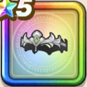

聖女のティアラ
攻略班 6.5点 / ギラ属性耐性+5%スライム系への耐性+5%バギ属性じゅもんダメージ+5%戦闘時のどうぐMP回復効果+10%
くわしい特徴
【レベル別習得スキル】 Lv1ギラ属性耐性+5% Lv8スライム系への耐性+5% Lv10戦闘時のどうぐMP回復効果+10% Lv15バギ属性じゅもんダメージ+5% Lv18幻惑成功率+3% Lv20【賢者】かいふく魔力+5 Lv23さいだいMP+5 Lv25守備力+7 【限界突破スキル】 1凸転び耐性+5% 2凸守備力+5 3凸かいふく魔力+5 4凸さいだいHP+5